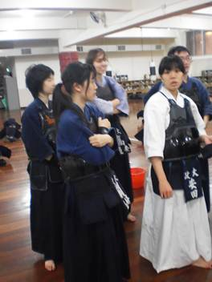

活動內容The Content of this Activity
18:30~20:00
第一階段：
基本禮儀：道場禮儀、服裝穿著。
步法練習：中段、送足、繼足。
揮劍練習：正擊面、左右面、小手、胴。
The first Part：
Basic etiquette: dojo etiquette, wearing apparel.
Footwork exercise: Kamae, Okuri Ashi, Tsugi Ashi.
Sword practice: Men, Kote, Do.
20:00~21:00
第二階段：
戴面練習：基本打擊、WAZA、比賽練習。
The second Part：
Practice by wearing Kendo boku(Kendo armour):basic, waza, shiai practices. |
活動照片Photos

↑社課休息時間Rest time during the sessions.
(參與者由前往後：97403016 廣電四安田志乃[日本外籍生]宗教所 高蓮安[俄羅斯外籍生]) |